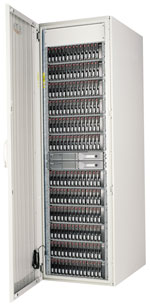
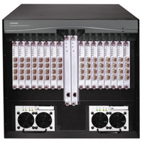
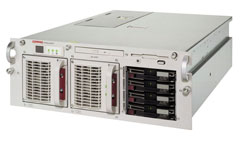

Александр Минаков
Долговременное корпоративное решение должно объединять самые современные технологии со стандартными компонентами. Не секрет, что при работе с приложениями, критически важными для бизнеса, клиентам требуются системы высокой степени готовности. С развитием Интернета и электронной коммерции высокая готовность зачастую становится основным требованием. Для клиентов также важно, чтобы кластеры строились из стандартных компонентов. Простои слишком дорого обходятся пользователям, но для их уменьшения целесообразно воспользоваться обычной кластеризацией серверов и систем хранения данных. Говоря об ИТ-решениях для бизнеса, отметим также нынешнюю тенденцию к консолидации систем хранения.
Кластеры семейства ProLiant Cluster, которые предлагает Hewlett-Packard (http://www.hp.com), реализуют концепцию SAN. В них используются два сервера, резервирующие друг друга и способные поддерживать работу приложений в случае отказа одного из серверов или приложения, выполняющегося на этом сервере. Кластеры семейства ProLiant Cluster и поставляемое с ними ПО ориентированы на заказчиков, которым требуется устойчивое к катастрофам решение для распределенных систем и Windows-приложений. Отметим, что разработчики в данном случае использовали диски с интерфейсом Fibre Channel - в системе хранения класса Enterprise они обеспечивают дополнительное улучшение характеристик, недостижимое в системах на основе SCSI.
Решение в целом
Вариант решения ProLiant Cluster HA/F500 for Enterprise Virtual Array позволяет строить кластерные системы с использованием как недублированного маршрута передачи данных между сервером и подсистемой хранения, так и дублируемых маршрутов для повышения готовности системы, реализуемых с помощью ПО HP Storage Works Secure. В состав базового варианта ProLiant Cluster входят:
- ProLiant HA/F500 Cluster Kit - комплект серверов семейства ProLiant с высокой производительностью или высокой плотностью компоновки;
- системы хранения StorageWorks Enterprise Virtual Array;
- ОС Microsoft Windows, поддерживающая кластерные решения.
|  | Система хранения StorageWorks Enterprise Virtual Array.
|
В системе отсутствуют компоненты, единичные отказы которых ведут к неработоспособности комплекса в целом. В результате при создании и развертывании кластерных систем для сетей SAN обеспечивается максимальная готовность. ProLiant Cluster HA/F500 for Enterprise Virtual Array - последнее по времени пополнение семейства продуктов для создания кластерных систем на основе системы хранения данных HP StorageWorks.
Полное решение включает систему хранения данных для корпоративного виртуального массива HP Enterprise Virtual Array Storage Systems v.2 (диски с интерфейсом Fibre Channel), программное обеспечение HP StorageWorks Secure Path 4.0 и Microsoft Windows Data Center для кластеров из 2 и 4 узлов. В комплекте также имеется сетевое оборудование на основе Fibre Channel, в том числе серверные адаптеры шины 2 Гбит/с, кабели, гигабитные оптические соединители GBIC (длинноволновые GBIC используются только для кластеров типа Disaster Tolerant, то есть устойчивых к катастрофическим отказам), 16-портовый коммутатор (2 Гбит/с). Предусмотрена поддержка коммутатора SAN Director 64 1 Gb Switch и ПО StorageWorks Enterprise Volume Manager. Число виртуальных дисков в новой версии увеличено с 256 до 512.
|  | Устройство SAN Director 64.
|
Как утверждают разработчики из HP, решение ProLiant Cluster HA/F500 for Enterprise Virtual Array обеспечивает непрерывное предоставление данных и услуг клиентам, минимизирует время простоя и замедление процессов. Для этого в системе используются резервные средства связи сервера с системой хранения, возможности ОС Windows и ПО HP SANworks Secure Path, которое предусматривает администрирование избыточной инфраструктуры на основе технологии Fibre Channel.
Области применения
Решение HP ProLiant Cluster HA/F500 for Enterprise Virtual Array предназначается для предприятий, уже имеющих серверы ProLiant или аналогичные системы с процессорной архитектурой x86, но желающих перевести ресурсы хранения с непосредственно подключаемых к серверам устройств (DAS) в консолидированную среду хранения (сеть устройств хранения Storage Area Network), а также для пользователей кластеров на базе серверов ProLiant, нуждающихся в высокопроизводительной наращиваемой системе хранения на базе протокола Fibre Сhannel.
Считается, что ProLiant Cluster HA/F500 for Enterprise Virtual Array идеально подойдет для клиентов, которые эксплуатируют SAN-сети на базе протокола Fibre Channel и которым требуется высокая производительность, большая емкость хранения и такие средства, как моментальные снимки (snapshots), практически не требующие дополнительного пространства для хранения.
К числу таких клиентов относятся банковские и финансовые предприятия и поставщики электронных брокерских услуг, предприятия розничной торговли, государственные и медицинские учреждения, высшие учебные заведения, издательства и вещательные компании.
На базе кластера ProLiant Cluster HA/F500 можно создать среду, в которой время простоя приложений значительно снижено или отсутствует: восстановление после сбоя приложения, ОС или оборудования не вызывает заметного перерыва в обслуживании клиентов.
Отметим, что кластерная система HA/F500 обеспечивает оптимальную среду и для исполнения самых обычных приложений, если они критически важны для бизнеса. Речь идет о таких приложениях, как Microsoft Exchange, Lotus Notes, ERP-системы (например, SAP, Baan или PeopleSoft), Web-продукты, такие, как Microsoft IIS или Netscape Commerce Server, и СУБД - Oracle, Sybase, Informix, IBM DB2 и Microsoft SQL Server.
Большинство Windows-приложений допускает исполнение в кластерной среде, и любое приложение, которое можно запустить из сценария, можно заставить работать и на кластере. Многие программы разрабатываются специально с учетом перспективы исполнения на кластерных системах (cluster aware). Они предусматривают перенос с аварийного сервера на резервный и обратно, а также перезапуск в кластерной среде.
Вообще говоря, если клиент нуждается в высоком уровне готовности систем хранения с интерфейсом Fibre Channel, но допускает наличие в системе компонентов, отказ которых может привести к неработоспособности системы в целом, то ему вполне подойдет комплект HA/F100 Cluster. Впоследствии с него можно перейти на версию HA/F200. Однако во многих случаях требуется максимальный уровень готовности в среде Windows NT/2000 без риска остановки системы в целом из-за отказа какого-либо одного компонента или же приходится использовать виртуализованные контроллеры SAN-сети и виртуализованные диски. В таких случаях подходящим вариантом станет комплект HA/F500 for Enterprise Virtual Array.
Серверы высокого уровня готовности
Наиболее производительные серверы производства Нewlett-Рackard стандартно оснащаются элементами обеспечения высокого уровня готовности и поддержки администрирования. К таким элементам относятся неиспользуемые в нормальном режиме (резервные) процессоры, зарезервированные вентиляторы охлаждения (заменяемые без остановки работы), зарезервированные модули питания процессоров. Кроме того, в них предусматривается замена плат PCI без остановки работы и поддержка дополнительных сетевых адаптеров (в том числе и двухпортовых сетевых адаптеров, которые также заменяются без остановки работы). Не забыты и зарезервированные блоки питания.
Кластер HP ProLiant Cluster HA/F500 можно сконфигурировать с применением множества стандартных серверов и компонентов, доступных в настоящее время. Это означает, что заказчики могут повысить готовность своих систем с помощью кластеров, собранных из уже имеющихся у них серверов.
В системе Enterprise Virtual Array каналы передачи данных между сервером и подсистемой хранения резервируются с помощью пары коммутаторов протокола Fibre Channel и пары контроллеров системы хранения, работающих в режиме горячего резервирования. Таким образом, обеспечивается полное резервирование всей аппаратуры, используемой для доступа к внешней подсистеме хранения.
ПО Hewlett-Packard, включенное в комплект продукта, обеспечивает статическое распределение нагрузки между двумя HBA-адаптерами (Host Bus Adapter), а в случае отказа одного из HBA-адаптеров или одной из оптических линий автоматически переносит всю нагрузку на остающийся исправным канал.
Существует возможность переноса рабочей нагрузки с аварийного узла на резервный с помощью ПО Microsoft Cluster Server (MSCS). Исполняемое приложение "перебрасывается" с одного из серверов кластера на другой в случае аппаратного или программного сбоя, включая отказ операционной системы. Предусмотрено также статическое распределение между серверами нагрузки, связанной с исполнением различных приложений для Windows 2000.
В кластерных системах HP ProLiant Cluster HA/F500 for Enterprise Virtual Array могут применяться такие модели серверов, как ProLiant DL360, DL360 G2, DL380, DL380 G2, DL580, DL580 G2, DL760, ML370 G3 с поддержкой PCI-X, а также сервер ProLiant 8500.
|  | Сервер HP ProLiant DL580.
|
Основные достоинства решения HPРазнообразные параметры самонастройки гарантируют выполнение требований соглашения о предоставлении услуг, что позволяет клиентам выполнять больше работы за меньшее время, изменять емкость системы по требованию и минимизировать непроизводительные издержки в организации прохождения данных. Современное ПО контроллера с поддержкой технологии визуализации VersaStor повышает эффективность использования дисков, позволяет без труда расширять емкость системы хранения. Все это помогает снизить издержки. Обеспечивается высокая плотность размещения и поддержка большего числа дисков в расчете на пару контроллеров. При использовании дисков емкостью 72 Гбайт и даже 17 Tбайт при 240 дисках на один контроллер (с возможностью расширения в будущем) емкость может достигать 12 Tбайт на площади примерно 0,5 м2, что уменьшает требования к занимаемой площади и также снижает затраты. Новая функция Virtual Capacity-Free Snapshot (Vsnap) позволяет существенно сэкономить дисковое пространство и повысить эффективность использования диска. Новая функция копирования Virtual Instantaneous Snapclone позволяет немедленно использовать копии клона, тем самым существенно экономя время. Клиент может просто заказать полные интегрированные конфигурации под одним артикульным номером плюс дисководы и ПО контроллеров, а также набор дополнительного ПО для соответствующей ОС, таким образом обеспечив полное соответствие решения своим требованиям. Инструментарий LiteTouch упрощает управление большими конфигурациями SAN, многократно уменьшает затраты времени на управление, сокращает издержки.
|
Система хранения высокого уровня готовности
Напомним, что Enterprise Virtual Array представляет новейшее поколение семейства систем хранения StorageWorks Disk Array, реализующее технологию VersaStor. Как утверждают разработчики, эти сверхвысокопроизводительные "виртуальные" RAID (Vraid) решения, отличающиеся сверхвысокой емкостью хранения и сверхвысоким уровнем готовности, предназначаются для верхнего сегмента корпоративного рынка. Они снимают временные и пространственные ограничения, характерные для систем хранения традиционной архитектуры (Enterprise Virtual Array - первый продукт в семействе Fusion).
В Enterprise Virtual Array впервые применены так называемые виртуализованные контроллеры сети SAN, виртуализованные диски, элементы дисковых систем хранения с интерфейсом FC-AL (Fibre Channel Arbitrated Loop) и администрирование ресурсов хранения через Web.
Под виртуализацией хранения здесь понимается прозрачная абстракция сервиса хранения на уровне логических блоков. Вообще говоря, виртуализация отделяет для пользователя логический доступ к данным от физического доступа, зависящего от расположения данных на том или ином конкретном диске. Виртуализация может быть реализована на любом уровне сети устройств хранения SAN (Storage Area Network), включая уровни сервера, коммутационной матрицы ("фабрики") и системы хранения. Считается, что примененная в Enterprise Virtual Array виртуализация на уровне отдельной системы хранения позволяет создавать крупные единые пространства хранения, физическая структура которых полностью скрыта за контроллерами.
Отметим, что виртуализация обеспечивает пользователю множество преимуществ, причем главные из них - повышенный коэффициент использования пространства хранения, упрощенное администрирование, высокая производительность и мощные средства тиражирования данных. Еще раз стоит подчеркнуть, что технология виртуализации, примененная в системе Enterprise Virtual Array, сводит все устройства хранения в единый пул, структура которого скрыта за контроллером системы хранения. Пул хранения представляет собой объединение физических дисков в единое логическое дисковое пространство, легко управляемое с помощью соответствующего ПО. Архитектура Enterprise Virtual Array допускает создание до 16 пулов хранения на одну пару контроллеров.
Здесь же отметим, что виртуальным диском обычно называется логический раздел пула хранения. По существу виртуальный диск эквивалентен логическому номеру устройства (Logical Unit Number, LUN) протокола SCSI. Можно делить пул хранения на виртуальные диски любого размера вплоть до 2 Тбайт (но не больше размера самого пула). Системы хранения Enterprise Virtual Array будут поддерживать до 512 виртуальных дисков на одну пару контроллеров.
Технология виртуализации VersaStor, использованная в системе хранения Enterprise Virtual Array, помимо прочего обеспечивает такие дополнительные функции, как репликация данных.
Репликация данных
В системе могут использоваться три типа средств репликации данных - традиционные копии текущего состояния (snapshot), копии состояния с виртуальным использованием дискового пространства (Virtually Capacity-Free Snapshot) и создание мгновенных клонов текущего состояния (Virtually Instantaneous Snapclone).
При использовании традиционных копий текущего состояния объем выделенного дискового пространства равен размеру исходного резервируемого объекта. Данные в резервный раздел записываются только по мере необходимости; иными словами, обновление данных в нем происходит при изменении данных на исходном виртуальном диске. При этом даже если какая-то часть резервного раздела не используется, она все равно должна быть исключена из общего пула хранения.
В случае виртуального использования дискового пространства система хранения не исключает доступа к выделенному дисковому пространству - это пространство начинает использоваться для резервирования только по мере изменения данных исходного виртуального диска. Таким образом, резервная область служит новым виртуальным диском, который первоначально находится в общем пуле. По мере размещения данных на оригинальном виртуальном диске пропорционально выделяется свободное пространство для сохранения копий его текущего состояния.
Как при традиционном резервировании, так и при использовании Virtually Capacity-Free Snapshot неразделяемые сегменты емкости хранения используются по мере записи новых данных. Отличие состоит в том, что в стандартной процедуре заблаговременно выделяется дисковое пространство, требуемое для выполнения операций резервирования, а в случае с Virtually Capacity-Free Snapshots дисковое пространство выделяется только по мере необходимости, одновременно с прекращением совместного использования сегментов общего дискового пространства. Поскольку исходные виртуальные диски и резервные виртуальные диски разделяют общее пространство для хранения сходных сегментов блоков данных, эта форма резервирования называется резервированием состояния системы с виртуальным использованием дискового пространства. В этом единственное отличие двух обсуждаемых методов. Здесь важно отметить, что копирование состояния с виртуальным использованием дискового пространства (Virtually Capacity-Free Snapshot) при использовании данного массива может выполняться при любом уровне избыточности (RAID 0, 1, 5).
Виртуальное мгновенное клонирование представляет собой усовершенствованный метод клонирования данных, сходный с традиционным клонированием, поскольку в этом случае для создания копии выделяется определенный объем дискового пространства. Полная копия оригинального виртуального диска создается со скоростью, которая ограничена лишь пропускной способностью дисковых систем, обеспечивая тем самым получение двух идентичных независимых копий данных за самый короткий отрезок времени.
Между традиционным клонированием данных и методом Virtually Instantaneous Snapclone имеется одно важное различие. При использовании традиционных контроллеров копия недоступна до момента окончания процесса клонирования. В случае Virtually Instantaneous Snapclone скопированные данные становятся доступными мгновенно. В процессе создания копии по методу Virtually Instantaneous Snapclone контроллеру обеспечивается доступ к оригинальному виртуальному диску, и он отслеживает все изменения данных с момента запуска процедуры клонирования. В этом случае пользователь может фактически мгновенно получить копию данных определенного состояния системы.
В общем случае метод Virtually Instantaneous Snapclone оптимален для создания копии, рассчитанной на долговременное хранение, или для получения нескольких копий диска. Между тем традиционное копирование состояния или копирование с виртуальным использованием дискового пространства (capacity-free) более подходят для получения временных и резервных копий.
С учетом исключительной масштабируемости модульных контроллеров и корпусов для дисковых массивов в системе Enterprise Virtual Array используется также модульная структура сетевых компонентов системы хранения. Корпуса дисковых массивов системы Enterprise Virtual Array имеют высоту 3U и предназначаются для установки жестких дисков с интерфейсом Fibre Channel. Пара контроллеров Enterprise, каждый в отдельном корпусе, также занимает 3U высоты аппаратной стойки.
Администрирование всех устройств Enterprise Virtual Array, подключенных к SAN-сети, проводится с центрального сервера администрирования SAN Management Appliance. Управляющие модули HSV Element Manager и HSG Element Manager могут работать на одном и том же устройстве SAN Management Appliance. Из-за этого пользователю придется распределять системы хранения Enterprise Virtual Array и Modular Array по различным зонам SAN-сети, каждая со своим сервером администрирования.
Резюме
В кластерах ProLiant Cluster интегрировано аппаратное и программное обеспечение, составляющее законченное решение для высоконадежной бизнес-среды. Серверы Hewlett-Packard, межсоединения, системы хранения данных, ПО производства Microsoft и Hewlett-Packard, а также документация по интеграции - все это прошло тщательные проверки и тестирование в кластерных конфигурациях. В результате тесного взаимодействия Hewlett-Packard с такими партнерами, как Microsoft, SAP, Baan, PeopleSoft, Oracle, Informix и т. д. были созданы кластерные приложения для данной системы. Hewlett-Packard использует этот опыт для помощи заказчикам в разработке кластерных конфигураций, отвечающих их требованиям.
Сравнение моделей кластеров
| Характеристика | HA/F100 для MSA1000 | HA/F200 для MSA1000 | HA/F500 для Enterprise Virtual Array |
| Поддерживаемые серверы | Широкий диапазон серверов ProLiant | Широкий диапазон серверов ProLiant | Серверы высокой производительности или высокой плотности компоновки семейства ProLiant |
| Целевая поддержка сервера | Да | Да | Да |
| Смешанная поддержка сервера | Да | Да | Да |
| Межсоединение сервер - сервер | Ethernet | Ethernet | Ethernet |
| Межсоединение сервер - система хранения | Поддержка модульного массива SAN Fabric Switch 6, Fibre Channel Storage Hub 7, 3 Port Mini-Hub, Fibre Channel Switch 8, Fibre Channel Switch 16, SAN Switch 8 and 16, 16 Port 2Gb Switch | Поддержка модульного массива SAN Array Fabric Switch 6, Fibre Channel Storage Hub 7, 3 Port Mini-Hub, Fibre Channel Switch 8, Fibre Channel Switch 16, SAN Switch 8 and 16, 16 Port 2Gb Switch | Поддержка Fibre Channel StorageFibre Channel Switch 8, Fibre Channel Switch 16, SAN Switch 8 and 16, SAN Director 64, 16 Port 2Gb Switch |
| Поддержка избыточного канала сервер - система хранения | Нет | Да; 2 петли FC, концентраторы, FC-коммутаторы, коммутаторы SAN, модульный массив SAN Fabric Switch 6 | Да; коммутаторы FC Switches, коммутаторы SAN |
| RAID-контроллеры Active/Standby или Active/Active | Нет; только одиночная петля | Active/Standby | Active/Active |
| Подсистема хранения данных | MSA1000 | MSA1000 | Enterprise Virtual Array |
| ПО управления кластером | MSCS | MSCS | MSCS |
| Цена | Относительно низкая начальная цена | Относительно низкая начальная цена | Относительно высокая начальная цена |
| Устойчивость к катастрофическим отказам | Нет | Нет | Есть в HA/F500 для MA8000; для массива Enterprise Virtual Array реализована в IV кв. 2002 г. |